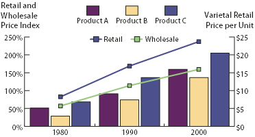

Combine different graph types
You can combine different graph types in one graph. For example, you may want one set of data to appear as a column graph and other sets of data to appear as a line graph. You can combine any type of graph with any other, with the exception of scatter graphs. Scatter graphs cannot be combined with any other graph type.

Combining columns and lines in one graph
- Select the Group Selection tool
 .
.